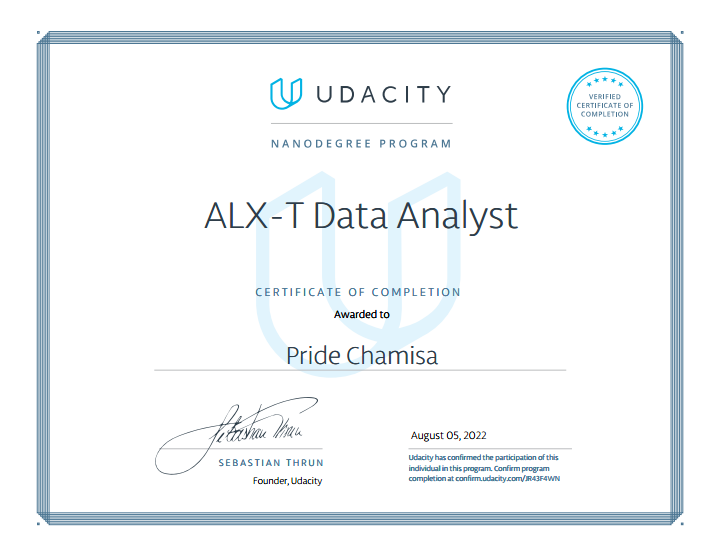
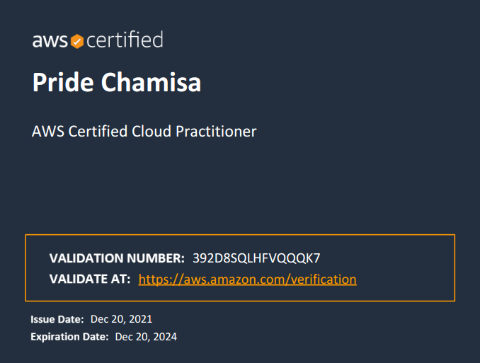
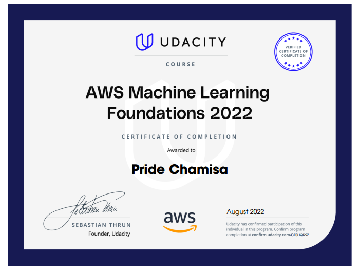

My CS degree provided a strong foundation in the theoretical and practical aspects of computing, with a focus on software engineering, artificial intelligence (AI), and data science. I gained proficiency in programming languages like Python, C++ and SQL, data structures and algorithms, and software development methodologies like Agile. This foundation allowed me to delve into coursework on machine learning, natural language processing, and data analysis, equipping me with the skills to tackle real-world problems in these exciting fields.
ALX-T Data Analyst (Udacity)

This program equipped me with the skills to tackle real-world data challenges using industry-standard tools like Python (libraries: NumPy, Pandas, Matplotlib) and SQL.
Through a series of hands-on projects, I honed my abilities in data wrangling, exploratory data analysis, and data visualization.
One project involved analyzing a dataset containing over 10,000 customer reviews for a retail company. I was able to identify key trends in customer sentiment and product preferences, and present my findings through interactive dashboards.
AWS Certified Cloud Practitioner

Achieved this certification in Dec 2021.
This credential validates my understanding of the AWS cloud platform, its core services, security best practices, and billing models.
Through the learning process, I gained a strong foundation in core AWS services, e.g., S3 storage, EC2 compute, CloudTrail logging.
I am now better equipped to discuss cloud solutions with clients, and make informed decisions about cloud adoption for your projects.
AWS Machine Learning Foundations (Nanodegree)

This Udacity Nanodegree program equipped me with the fundamentals of machine learning (ML) using AWS cloud services. I gained hands-on experience building and deploying ML models on Amazon SageMaker, a platform specifically designed for ML workflows. Through the program, I honed my skills in areas like data preparation, model selection, evaluation metrics. One particularly interesting project involved building a sentiment analysis model for social media data with an accuracy of 85%.